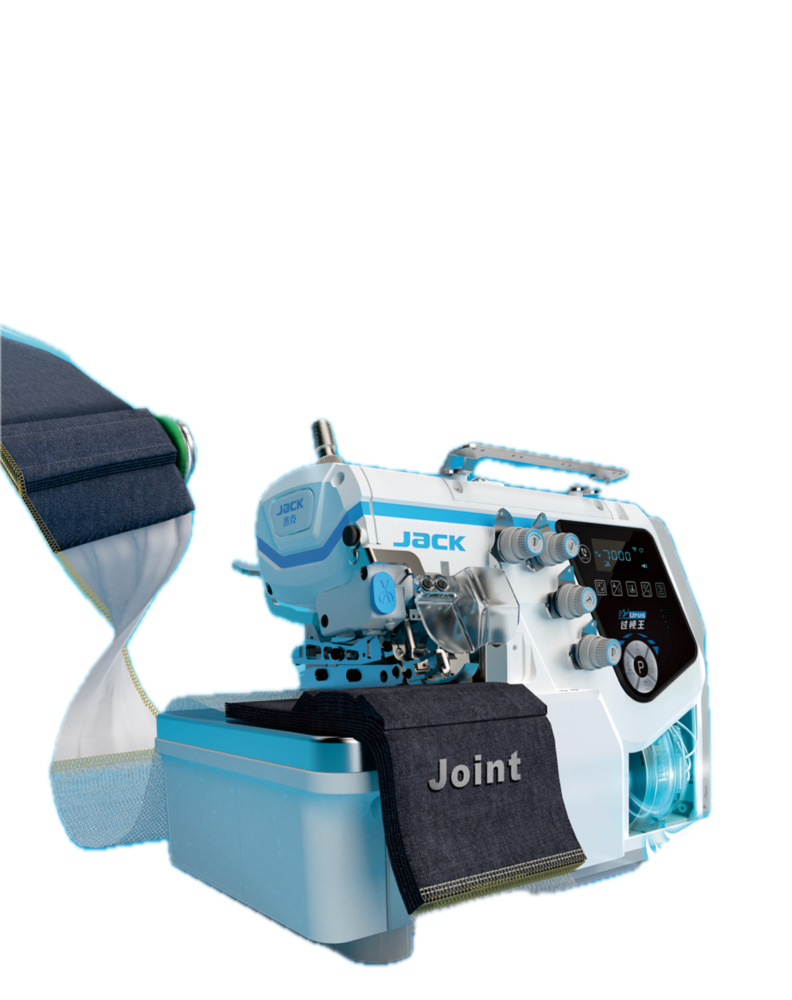
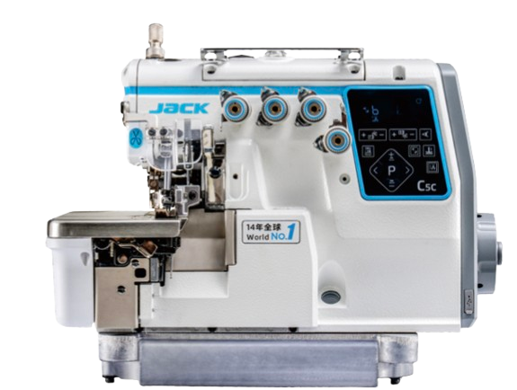
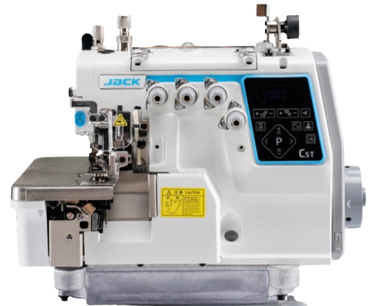
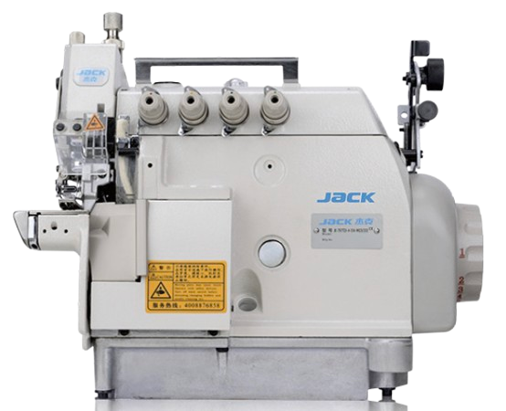

Edges that never
slow down.
Five overlock machines, led by the AI-driven C7 Urus, built to carry thick seams, elastic joints and delicate knits through the same head without missing a stitch.
Full speed,
across every seam.
C7's AI Full Speed Feeding System reads fabric joint changes in real time, coordinating the Presser Foot Transformer and Smart Rhino Feeding to carry thick, thin, elastic and hard joints through the head at full speed — no slowdown, no re-adjustment.
- Presser Foot Transformer: 32,000 detections a second, 0.00006 microsecond pressure response
- Smart Rhino Feeding: 9.2Nm torque, precise force at every degree of 360°
- Comprehensive per-unit efficiency improved by 10%+
- Dedicated denim variants for heavy, multi-layer seams

Four more edges, covered.
From everyday overlocking to differential feeding and cylinder-bed work, each head below is tuned for a specific fabric and seam.

High-efficiency computerized overlock with 0-second thread trimming and lifting, Smart Rhino Feeding and three-mode seamless switching between thin, medium and thick fabric.
View spec sheet
Top and bottom differential feeding stops split layers on long pieces, with a higher presser foot lift for home textiles, thermal underwear and car seat cushions.
View spec sheet
Small cylinder-bed, variable top-feed power-saving overlock for necklines, cuffs and socks, with a top differential device for strong fabric feeding.
View spec sheet
An overlock head mounted on an extended folding table with integrated waste collection, purpose-built to automate collar attaching on high-volume knitwear lines.